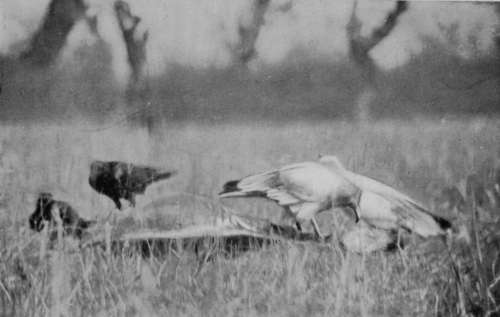
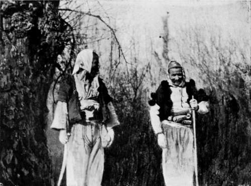
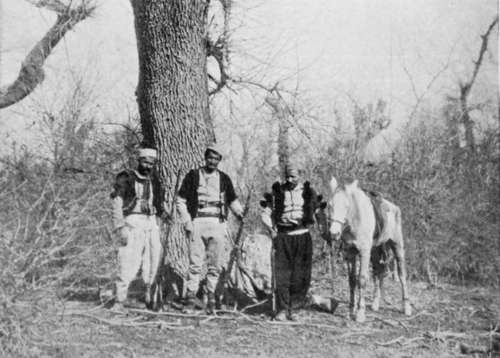

The Balkans Revisited : Albania. Part 4
Description
This section is from the book "Bird-Hunting Through Wild Europe", by R. B. Lodge. Also available from Amazon: Bird-Hunting Through Wild Europe.
The Balkans Revisited : Albania. Part 4
I should have much liked to spend a week exploring the pine-forests. No doubt the Sea Eagles, observed daily harrying the Coots and Gulls, must breed there, and perhaps other raptores, of which we saw a few (Buzzards, &c), but we were unable to delay. It was positively B-'s last sporting experience in Albania, as he had been transferred to the United States. The steamer was due in less than a week, and his things were still unpacked, so we were obliged reluctantly to turn our backs on the Pelicans and all the possibilities of the forest.
But before we left the fishermen were set to work collecting pine-cones. The kernels of the seeds embedded in the big cones are much used for food, and are always included in the little dishes served before a Turkish dinner. It may be noted that 'kernels of the pine,' with pistachios, walnuts, hazelnuts, and almonds, are mentioned in the tales of the Arabian Nights as included among the delicacies purchased by Amina and Zobeide when they entertained the porter, the three calendars, and the Caliph Haroun-al-RaschicL The cones are roasted over a fire until they open, and the pips are then taken out and peeled. They resemble small peeled almonds, and have a pleasant nutty flavour. We found them very nice for dessert, and they go very well with a glass of sherry or Hungarian wine.
Returning we had to make a long detour, for our fishermen guides besought us to show ourselves at their village. It seemed that the inhabitants were very uneasy about our presence again in their neighbourhood, and were afraid of getting into trouble with the Turkish authorities, as last year the chief man had been imprisoned for helping us. They wanted to see with their own eyes our suwarries, so as to make sure that we were travelling with the knowledge of the pasha.
When we reached their village we found all the men assembled to meet us. We halted a few minutes to greet them and to pay off the fishermen who had served us so well. But we couldn't stay long, as we had a long day's ride before us, and I expect they were relieved to see the last of us.
We were very glad to find ourselves back at the Consulate, for the ride was a trving one on account of the bitter cold wind which was blowing. On the way B-borrowed my rifle for a shot at a Wild Goose he had spotted while riding through a plain near the salt-pans. The bullet I saw strike just over the bird, probably from his having overestimated the distance.
The next few days were devoted to packing and getting ready for B-'s departure, and in skinning the Pelican and a Sea Eagle I had laid low with a rifle-bullet. A few days later a Griffon Vulture was obtained in the same way.
Before B-left me to my own resources I had arranged to spend a week on the outskirts of a large forest, a few hours' ride along the farther side of the lagoon, with a friendly Albanian family whom I had met last year. It would be a good opportunity for trying to photograph some of the numerous Eagles and Vultures which had been seen by us daily on our rides abroad, and also would enable me to see something more of the home life and customs of the Albanians.
There were an extraordinary number of carcases of animals lying about the country in every direction, which had been bogged in the deep mud. On several occasions I had ridden past Eagles quietly sitting on low trees and even in quite small bushes, and had determined not to leave the country without making an effort to attract them within reach of my camera.
Egyptian Vultures And Ravens
I had made one attempt at the carcase of a horse, but it was in a bad place : too near a frequented roadway, and by the time we heard of it it had been almost devoured. From the hollow cavity encircled by the rib-bones, now bare and white, flew a perfect cloud of Magpies and Hooded Crows, like a legion of evil spirits, while three or four savage dogs from some huts which were near tore at the bones and growled fiercely at one another. I had some difficulty in driving them off. A Golden Eagle sat on the top of a tree in a neighbouring field, and at least a dozen Ravens were assembled on another, hardly condescending to move or even to look round as we rode past, while four Griffons occupied a dead and withered stump in the borders of the forest. But I did no good here, it was altogether too near the houses, yet it seemed to prove that the birds were there and could be attracted by a carcase if I could find a suitable place provided with a hollow tree in which to hide, sufficiently remote to be out of the reach of the dogs, which would be certain to smell out anything within half a mile.
From my friends' house, which was on an elevated hill, there was a good view of the forest and country round. One evening, while examining the distance through my field-glass for any signs of birds or nests, I thought I could make out at a great distance a large nest on the summit of a tree. I even fancied I could see the head of a bird in it. Pointing it out to one of the Albanians who was with me, he said it was a Hoidin. This meant, I knew, an Eagle or Vulture ; for, like the Spanish herdsmen, these men do not know there is any difference, and have but the one name for both birds. But he said that there was much water in the forest, and that it would be no easy thing to reach the spot. However, I made arrangements to go there the next morning under his guidance, and see for myself what it was. I thought that in all probability, judging from the size of the nest visible from such a great distance, that it would be that of a Black Vulture (Vultur monachas). For only a few days before I had seen one of these great birds circling round in company with some Griffons above the carcase of a donkey as we rode out from Durazzo.
We found it an hour's ride to reach this nest, and certainly there was much water in the forest. These Albanian forests are very weird-looking places, and most difficult to penetrate owing to the lack of roads, the deep mud, the water-logged state of everything, and the thorns. The trees are chiefly oak and very large, but in this part they had been lopped and burnt until they presented the most curious appearance. Their twisted branches and gaunt trunks divested of bark were of a ghastly dead-white, and the hollowed trunks were burnt and scorched with fire, looking as black as ink within. The fantastic shapes of these dead monsters of the forests, and the strange contrasts of black and white, gave them the resemblance of skeletons of gigantic beasts which had been tortured to death in an upright position, rather than the remains of trees.
Unexpected Visitors In The Forest
'One Of Them Brought Back My Horse'
Continue to:
- prev: The Balkans Revisited : Albania. Part 3
- Table of Contents
- next: The Balkans Revisited : Albania. Part 5